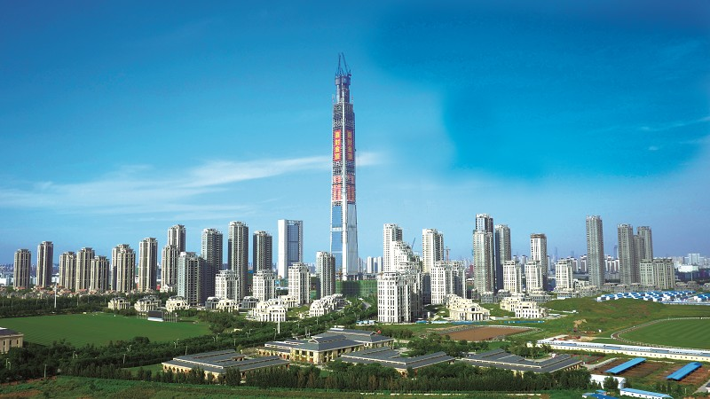
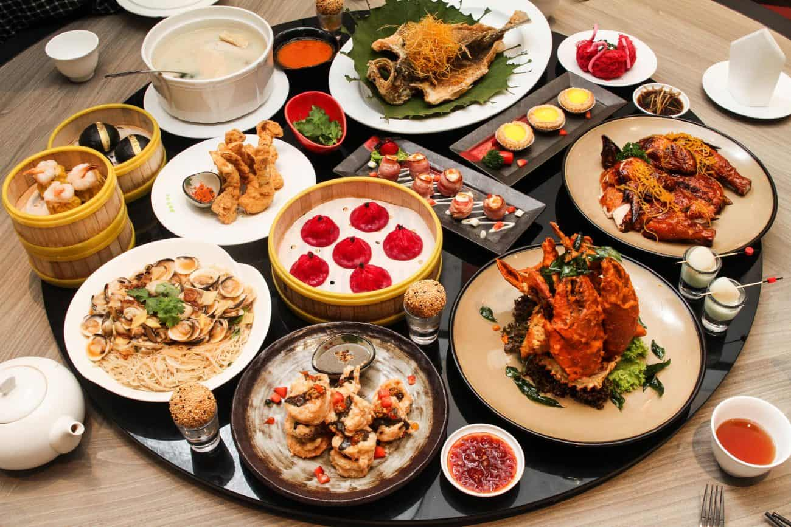

Histoire
La Chine possède l'une des plus anciennes civilisations du monde, avec plus de 5 000 ans d'histoire. Des premières dynasties comme les Zhou et les Qin à l'ère moderne, ce pays a marqué le monde avec des inventions telles que le papier, l'imprimerie, la boussole et la poudre à canon. La Grande Muraille et la Cité Interdite sont des témoignages vivants de ce riche passé.
Géographie
S'étendant sur plus de 9,6 millions de kilomètres carrés, la Chine est le troisième plus grand pays au monde. Elle offre des paysages variés, allant des montagnes de l'Himalaya au désert de Gobi, en passant par les forêts subtropicales et les rizières en terrasse du sud. Les fleuves comme le Yangtsé et le Fleuve Jaune sont essentiels à la vie et à l'histoire du pays.

Économie
La Chine est aujourd'hui la deuxième économie mondiale et un acteur majeur du commerce international. Avec des industries dynamiques dans les technologies, le textile, et une main-d'œuvre qualifiée, elle se développe à une vitesse fulgurante. Ses grandes métropoles comme Shanghai et Shenzhen sont des symboles de son essor économique.
Technologie
La Chine est également à la pointe de la technologie avec des géants comme Huawei, Alibaba et Tencent. Les villes modernes regorgent d'innovations, allant des paiements sans contact omniprésents aux systèmes de transport futuristes comme les trains à grande vitesse. Le pays investit massivement dans la recherche et les énergies renouvelables pour soutenir son développement durable.

Gastronomie
La cuisine chinoise est réputée dans le monde entier pour sa diversité et ses saveurs uniques. Des raviolis de Shanghai au canard laqué de Pékin, chaque région offre ses spécialités. La variété des ingrédients, les techniques de cuisson sophistiquées et l'équilibre des saveurs font de la cuisine chinoise une expérience culinaire incontournable.